Cách đăng ký người phụ thuộc qua mạng năm 2025; Hồ sơ thủ tục đăng ký giảm trừ gia cảnh người phụ thuộc như: Bố mẹ, con, cháu, anh, chị em ... Cách đăng ký trên thuedientu.gdt.gov.vn và trên phần mềm HTKK mới nhất.
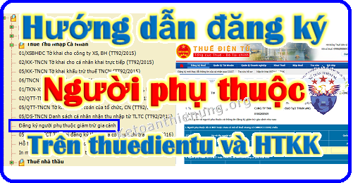
----------------------------------------------------------------------------------------
Chú ý:
- Người nộp thuế có thu nhập từ tiền lương, tiền công để được giảm trừ gia cảnh đối với người phụ thuộc thì phải làm thủ tục đăng ký người phụ thuộc và có hồ sơ chứng minh.
Xem thêm: Điều kiện giảm trừ gia cảnh người phụ thuộc.
- Cá nhân được cấp 01 mã số thuế duy nhất để sử dụng trong suốt cuộc đời của cá nhân đó.
+) Người phụ thuộc của cá nhân được cấp mã số thuế để giảm trừ gia cảnh cho người nộp thuế thu nhập cá nhân. Mã số thuế cấp cho người phụ thuộc đồng thời là mã số thuế của cá nhân khi người phụ thuộc phát sinh nghĩa vụ với ngân sách nhà nước;
---------------------------------------------------------------------------------------------
- Bài viết này Kế toán Diệu Tâm xin hướng dẫn cách đăng ký người phụ thuộc (mới) và tăng giảm (cắt) người phụ thuộc cho nhân viên trong Doanh nghiệp, cụ thuể như sau:
+) Trường hợp cá nhân đăng ký người phụ thuộc trực tiếp với Cơ quan thuế thì:
Hồ sơ gồm:
- Tờ khai đăng ký người phụ thuộc giảm trừ gia cảnh Mẫu 20-ĐK-TCT (theo Thông tư 105/2020/TT-BTC ngày 03/12/2020 của Bộ Tài chính). (trên tờ khai đánh dấu vào ô "Đăng ký thuế" và ghi đầy đủ các thông tin).
- Bản sao Thẻ căn cước công dân hoặc bản sao Giấy chứng minh nhân dân còn hiệu lực đối với người phụ thuộc có quốc tịch Việt Nam từ đủ 14 tuổi trở lên; bản sao Giấy khai sinh hoặc Hộ chiếu còn hiệu lực đối với người phụ thuộc có quốc tịch Việt Nam dưới 14 tuổi; bản sao Hộ chiếu còn hiệu lực đối với người phụ thuộc là người có quốc tịch nước ngoài hoặc người có quốc tịch Việt Nam sinh sống tại nước ngoài.
=> Chi tiết các bạn liên hệ với Chi cục thuế nhé.
------------------------------------------------------------------------
+) Trường hợp DN đăng ký người phụ thuộc cho nhân viên thì như sau:
- Có 2 cách để Đăng ký người phụ thuộc là: làm trên phần mềm HTKK rồi nộp qua mạng hoặc kê khai trực tuyến trên trang thuedientu.gdt.gov.vn.
+ Nếu DN bạn đăng ký cho ít người phụ thuộc thì có thể làm trực tuyến trên thuedientu.gdt.gov.vn cho nhanh.
+ Nếu DN bạn đăng ký cho nhiều người phụ thuộc thì có thể tải file bảng kê Excel vào phần mềm HTKK rồi kết xuất XML để nộp qua mạng thuedientu.
Thủ tục Đăng ký người phụ thuộc như sau:
1. Người lao động nộp cho DN những giấy tờ sau:
- Văn bản ủy quyền cho DN.
Tải về tại đây: Mẫu ủy quyền đăng ký người phụ thuộc.
- Giấy tờ của người phụ thuộc: (bản sao Thẻ căn cước công dân hoặc bản sao Giấy chứng minh nhân dân còn hiệu lực đối với người phụ thuộc có quốc tịch Việt Nam từ đủ 14 tuổi trở lên; bản sao Giấy khai sinh hoặc bản sao Hộ chiếu còn hiệu lực đối với người phụ thuộc có quốc tịch việt Nam dưới 14 tuổi; bản sao Hộ chiếu đối với người phụ thuộc là người có quốc tịch nước ngoài hoặc người có quốc tịch Việt Nam sinh sống tại nước ngoài).
- Hồ sơ chứng minh người phụ thuộc.
Xem chi tiết tại đây: Hồ sơ giảm trừ gia cảnh
2. DN nộp cho cơ quan thuế những giấy tờ sau:
- Cơ quan chi trả thu nhập tổng hợp hồ sơ đăng ký thuế của người phụ thuộc.
- Nộp Tờ khai đăng ký tổng hợp người phụ thuộc mẫu 20-ĐK-TH-TCT hoặc Mẫu 02TH cho Cơ quan thuế. Trình tự như sau:
TRƯỜNG HỢP I - Đăng ký người phụ thuộc bằng mẫu số: 20-ĐK-TH-TCT (Mẫu 02TH - theo Thông tư số 95/2016/TT-BTC)
CÁCH 1: Làm mẫu 02TH trên phần mềm HTKK
- Cách này thường áp dụng cho những DN đăng ký người phụ thuộc cho nhiều người nhé.
(Vì trên phần mềm HTKK có hỗ trợ chức năng tải bảng kê Excel vào phần mềm HTKK, nên các bạn có thể copy số liệu vào file Excel rồi tải lên HTKK cho nhanh).
Bước 1: Tải phần mềm HTKK mới nhất về tại đây: Phần mềm HTKK mới nhất
=> Trên phần mềm HTKK các bạn có thể đăng ký MST cá nhân cho nhân viên; Đăng ký người phụ thuộc giảm trừ gia cảnh cho nhân viên ...
Bước 2: Sau khi cài đặt xong => Các bạn bật phần mềm HTKK => Đăng nhập bằng MST của Doanh nghiệp => Vào mục "Thuế thu nhập cá nhân" => "Đăng ký người phụ thuộc giảm trừ gia cảnh" như hình dưới:
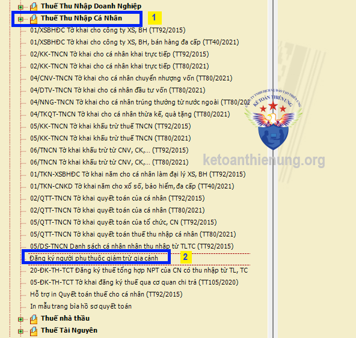
Bước 3: Nhập các thông tin vào bảng tổng hợp Mẫu 02TH:
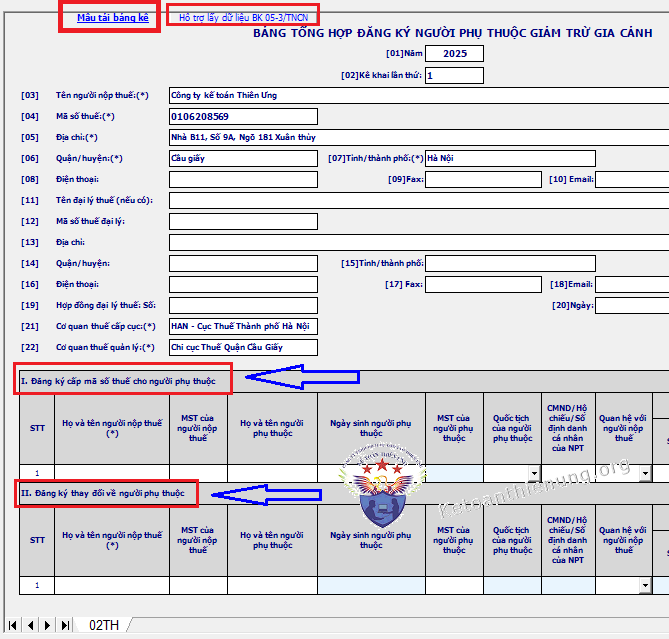
- Trường hợp đăng ký người phụ thuộc cho nhiều người các bạn tải bảng kê Excel như sau:
Bước 1: Bấm vào "Mẫu tải bảng kê" chữ màu xanh, góc trên, bên trái => để tải mẫu bảng kê Excel chuẩn của phần mềm HTKK về máy tính.
Bước 2: Nhập hoặc copy thông tin vào file Excel đó.
Bước 3: Lưu file đó (Chú ý: không được đổi tên file Excel đó)
Bước 4: Bấm vào "Tải bảng kê" trên phần mềm HTKK => chọn file Excel vừa làm xong đó. (Chú ý: trước khi tải file Excel đó vào HTKK thì tắt file Excel đó đi)
Chi tiết xem tại đây nhé: Cách tải file Excel vào phần mềm HTKK.
-----------------------------------------------------------------------------------------------
Cách khai thông tin vào Bảng đăng ký người phụ thuộc Mẫu 02TH:
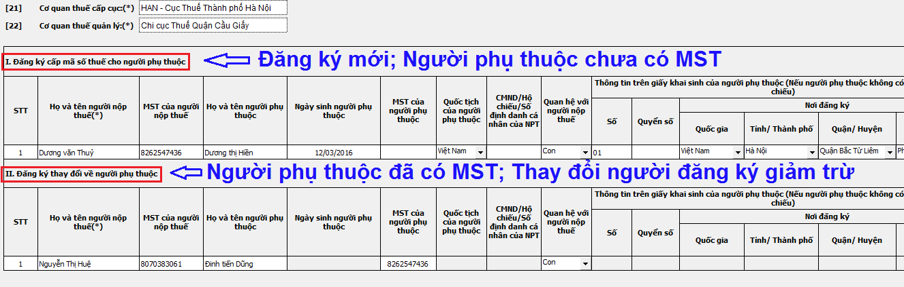
- Trường hợp NPT (người phụ thuộc) chỉ có năm sinh, không có ngày tháng thì chỉ tiêu "Ngày sinh của NPT" ghi (01/01/năm sinh).
- Trường hợp NPT là trẻ em mới sinh, trên Giấy khai sinh không có quyển số thì chỉ tiêu "Quyển số" ghi (X)
----------------------------------------------------------------------------
- Trường hợp đăng ký người phụ thuộc mới:
VD 1: Nhân viên Đinh Văn A đăng ký người phụ thuộc là con: Đinh Văn B. Thời gian từ tháng 4/2024 (người con này chưa được ai đăng ký giảm trừ, nên chưa có MST).
Cách khai thông tin trên Mẫu 02TH như sau:
- Các bạn nhập thông tin của của người cha và con vào Mục I "Đăng ký cấp MST cho người phụ thuộc"
=> Cột "Thời gian tính giảm trừ" "Từ tháng" ghi: 04/2025,
- Cột "Đến tháng" ghi như sau: Để trống (nếu chưa xác định được muốn đăng ký giảm trừ đến khi nào) - Còn nếu muốn đăng ký giảm trừ đến thời điểm nào thì ghi rõ số tháng/năm: ví dụ đến 12/2025
----------------------------------------------------------------------------------
- Trường hợp thay đổi người phụ thuộc:
=> Như: tăng giảm (cắt) người phụ thuộc hoặc thay đổi nơi làm việc:
VD 2: Nhân viên Nguyễn Việt Thắng muốn đăng ký người phụ thuộc là con: Nguyễn Việt Tiến. Thời gian tính giảm trừ từ tháng 1/2025.
=> Nhưng người con lại đang được người mẹ đăng ký giảm trừ ở 1 công ty khác, thời gian từ tháng 9/2023.
Cách khai thông tin trên Mẫu 02TH như sau:
- Bước 1: Yêu cầu bên công ty của mẹ đăng ký giảm (cắt) người phụ thuộc đó.
- Có 2 trường hợp xảy ra như sau:
+) Nếu khi đăng ký người phụ thuộc bên công ty mẹ ghi Cột "Đến tháng" ghi là: 12/2024 => Thì bên công ty mẹ không phải báo giảm nữa (vì đăng ký đến 12/2024 là hết rồi).
+) Nếu khi đăng ký người phụ thuộc bên công ty mẹ cột "Đến tháng" ghi là "Để trống" (tức là chưa biết giảm trừ đến khi nào) => Thì bên công ty mẹ phải khai báo giảm:
=> Cách thực hiện như sau: nhập thông tin của người mẹ và con vào Mục 2 "Đăng ký thay đổi về người phụ thuộc" => cột "Thời gian tính giảm trừ" "Từ tháng" ghi: 09/2023. "Đến tháng" ghi: 12/2024.
(Vì người bố muốn đăng ký giàm trừ từ tháng 1/2025, nên bên công ty mẹ phải báo giảm tháng 12/2024)
- Bước 2: Sau khi bên công ty mẹ báo giảm thành công (có kết quả trả về) => bên công ty người Cha thực hiện đăng ký Tăng.
=> Cách thực hiện như sau: nhập thông tin của người Cha và Con vào Mục 2 "Đăng ký thay đổi về người phụ thuộc" => cột "Thời gian tính giảm trừ" "Từ tháng" ghi: 01/2025,
- Cột "Đến tháng" ghi như sau: Để trống (nếu chưa xác định được muốn đăng ký giảm trừ đến khi nào) - Còn nếu muốn đăng ký giảm trừ đến thời điểm nào thì ghi rõ số tháng/năm: Ví dụ đến 12/2025.
---------------------------------------------------------------------------------------
- Trường hợp thay đổi nơi làm việc:
Ví dụ 3: Nhân viên C đăng ký người phụ thuộc là con => Người con này nhân viên C đã đăng ký giảm trừ ở Công ty A (tức là đã được cấp MST người phụ thuộc) => Bây giờ nhân viên C chuyển sang làm Công ty B và muốn đăng ký giảm trừ người con đó
=> Thì quy trình các bạn cũng làm như trên nhé (Ví dụ 2) => Tức là bên Cty A phải báo giảm => Sau đó bên Cty B mới báo tăng được (và bên Cty B cũng phải yêu cầu Nhân viên C phải chuẩn bị 1 bộ hồ sơ người phụ thuộc như bên Cty A nhé).
-------------------------------------------------------------------------------
Ví dụ 4: Tháng 3/2025 bà D sinh con, tháng 8/2025 bà D đăng ký giảm trừ gia cảnh cho người phụ thuộc.
=> Trên Mẫu số 02/ĐK-NPT-TNCN (hoặc Mẫu 02TH) khai chỉ tiêu “thời điểm tính giảm trừ” là tháng 3/2025 thì trong năm bà D được tạm tính giảm trừ gia cảnh cho người phụ thuộc kể từ tháng 8/2025.
=> Khi quyết toán bà D được tính giảm trừ gia cảnh cho người phụ thuộc từ tháng 3/2025 đến hết tháng 12/2025 mà không phải đăng ký lại.
Ví dụ 5: Tháng 3/2025 bà D sinh con, tháng 8/2025 bà D đăng ký giảm trừ gia cảnh cho người phụ thuộc.
=> Trên Mẫu số 02/ĐK-NPT-TNCN (hoặc Mẫu 02TH) khai chỉ tiêu “thời điểm tính giảm trừ” là tháng 8/2025 thì trong năm bà D được tạm tính giảm trừ gia cảnh cho người phụ thuộc kể từ tháng 8/2025.
=> Khi quyết toán để được tính lại theo thực tế phát sinh từ tháng 3/2025 thì bà D phải đăng ký lại theo thực tế phát sinh tại Mẫu số 02/ĐK-NPT-TNCN (hoặc Mẫu 02TH) và gửi kèm theo hồ sơ quyết toán thuế.
------------------------------------------------------------------------------------------
Chú ý: Theo khoản 1, điều 9, Thông tư 111/2013/TT-BTC
"Mỗi người phụ thuộc chỉ được tính giảm trừ một lần vào một người nộp thuế trong năm tính thuế.
- Trường hợp nhiều người nộp thuế có chung người phụ thuộc phải nuôi dưỡng thì người nộp thuế tự thỏa thuận để đăng ký giảm trừ gia cảnh vào một người nộp thuế".
Nghĩa là: Trong 1 năm tính thuế 1 người phụ thuộc chỉ được tính giảm trừ 1 lần cho 1 người
----------------------------------------------------------------------------------------------------
- Sau khi đã nhập xong thông tin đăng ký người phụ thuộc => bấm "Kiểm tra" => "Kết xuất XML" => để nộp qua mạng, chi tiết xem Bước 4 bên dưới nhé:
- Các bạn cũng nên kết xuất 1 bản Excel để sau này giải trình thuận lợi nhé.
---------------------------------------------------------------------------------------------------
Bước 4: Nộp hồ sơ đăng ký người phụ thuộc Mẫu 02TH qua mạng thuedientu:
- Các bạn sẽ nộp hồ sơ trên thuedientu.gdt.gov.vn
- Đầu tiên: các bạn đăng nhập vào trang thuedientu để kiểm tra xem công ty mình đã đăng ký Mẫu 02TH trên thuedientu.gdt.gov.vn chưa:
- Cách kiểm tra như sau: => bấm vào "Khai thuế" => "Đăng ký tờ khai"
=> Trên đó sẽ hiển thị hết tất cả các loại tờ khai mà công ty bạn đã đăng ký.
a, Trường hợp công ty bạn đã đăng ký Mẫu 02TH trên thuedientu.gdt.gov.vn rồi => thì không phải đăng ký nữa => chỉ cần nộp Mẫu 02TH (chi tiết cách nộp, xem các bước Cách nộp Mẫu 02TH bên dưới nhé).
b, Trường hợp công ty bạn chưa đăng ký Mẫu 02TH trên thuedientu (tức là đây là Đăng ký người phụ thuộc lần đầu của công ty bạn hoặc lần đầu trên trang thuedientu) => thì phải đăng ký Mẫu 02TH trên thuedientu => sau đó mới nộp được Mẫu 02TH qua mạng, trình tự như sau:
4.1: Cách đăng ký Mẫu 02TH trên thuedientu:
- Các bạn cắm chữ ký số vào máy tính và truy cập vào Thuedientu.gdt.gov.vn
=> Đăng nhập bằng tài khoản chữ ký số (MST Doanh nghiệp bạn đã đăng ký nhé).
=> Chú ý: Đăng nhập bằng MST Doanh nghiệp và thêm chữ -QL nhé.
Ví dụ: 0106208569-QL (viết hoa hay viết thường đều được nhé).
=> Mật khẩu chính là mật khẩu đăng nhập vào MST bình thường của DN đó nhé.
- Trường hợp khi đăng nhập bằng MST thường thì được => nhưng thêm chữ -ql vào thì ko được => thì các bạn lên google gõ: "Cách lấy lại mật khẩu trên thuedientu" nhé.

- Sau khi đã đăng nhập thành công: các bạn vào "Khai thuế" => "Đăng ký tờ khai" => "Đăng ký thêm tờ khai"
=> Tìm đến phần "Thuế thu nhập cá nhân" => tích chọn "02TH - Bảng tổng hợp đăng ký người phụ thuộc giảm trừ gia cảnh" => Tiếp tục.
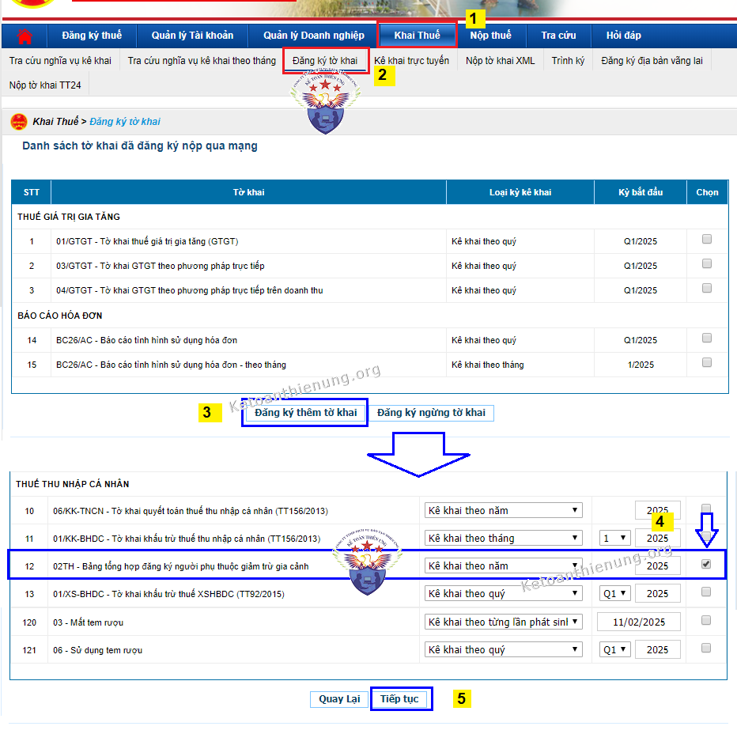
=> Đăng ký xong Mẫu 02TH => Thì các bạn mới có thể nộp mẫu 02TH trên thuedientu.gdt.gov.vn được nhé.
--------------------------------------------------------------------------------------------
4.2. Cách nộp Đăng ký người phụ thuộc Mẫu 02TH trên thuedientu:
- Các bạn bấm vào "Khai thuế" => "Nộp tờ khai XML" => "Chọn tệp tờ khai" => Chọn nơi lưu File XML (File 02TH mà các bạn vừa kết xuất XML ở Bước 3 bên trên nhé) => "Ký điện tử" => Nhập mã Pin => "Nộp tờ khai".
- Nhớ là phải cắm chữ ký số vào nhé, để ký điện tử.
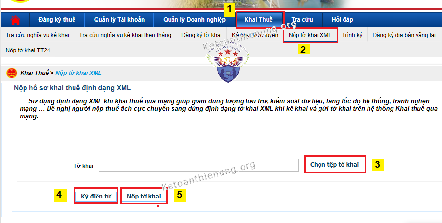
- Sau khi nộp thành công => các bạn phải tra cứu để xem tình trạng tiếp nhận hồ sơ khai thuế như thế nào nhé.
=> Bấm vào "Tra cứu" => "Thông báo khai thuế" => "Tra cứu" => Sẽ hiển thị tình trạng hồ sơ mà DN nộp như nào.
Kết quả: Nếu các bạn nộp đủ hồ sơ và khai đúng chỉ trong ngày là có kết quả ngay nhé => Các bạn tải kết quả đó về để kiểm tra nhé.
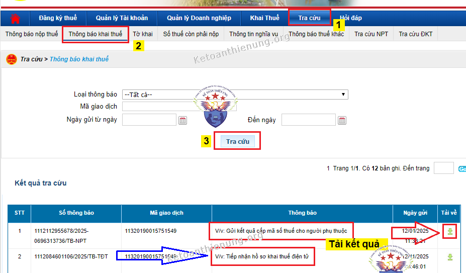
- Như vậy là các bạn đã đăng ký người phụ thuộc thành công và đã được cấp MST người phụ thuộc thành công nhé.
CÁCH 2: Làm mẫu 02TH trực tuyến trên trang thuedientu
Bước 1:
- Các bạn cắm Chữ ký số vào máy tính và truy cập vào Thuedientu.gdt.gov.vn
=> Đăng nhập bằng Tài khoản chữ ký số (MST Doanh nghiệp bạn đã đăng ký nhé).
=> Chú ý: Đăng nhập bằng MST doanh nghiệp và thêm chữ -QL nhé. (Cũng giống như trên Cách 1 nhé).
Ví dụ: 0106208569-QL 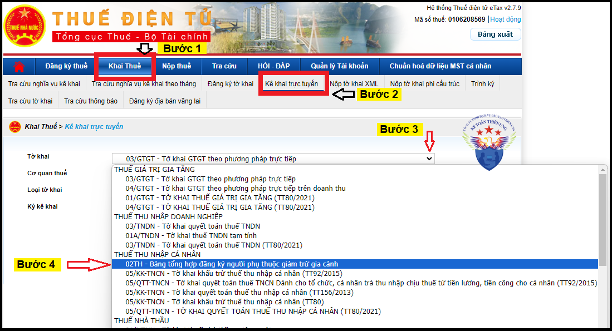 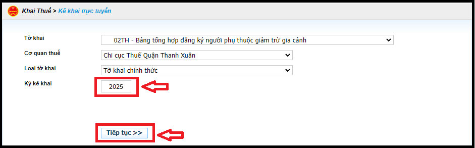
=> Sau khi đăng nhập thành công: => bấm vào "Khai thuế" => bấm "Kê khai trực tuyến" => tiếp đó chọn tờ khai "Mẫu số: 02TH - Bảng tổng hợp đăng ký người phụ thuộc giảm trừ gia cảnh" => chọn "Kỳ kê khai" là năm 2025 => ấn "Tiếp tục".
- Sau khi khai xong các thông tin, các bạn bấm "Hoàn thành kê khai" => "Nộp hồ sơ đăng ký thuế"
=> Tiếp đó các bạn vào "Khai thuế" => "Tra cứu tờ khai" để xem tình trạng hồ sơ như thế nào nhé.
Kết quả: Nếu các bạn nộp đủ hồ sơ và khai đúng chỉ trong ngày là có kết quả ngay nhé => các bạn tải kết quả đó về để kiểm tra nhé.
- Bấm vào "Tra cứu tờ khai" => Lựa chọn Tờ khai "Mẫu số: 02TH - Bảng tổng hợp đăng ký người phụ thuộc giảm trừ gia cảnh" => "Tra cứu".
-----------------------------------------------------------------------------------------
TRƯỜNG HỢP II - Đăng ký người phụ thuộc bằng mẫu số: 20-ĐK-TH-TCT (theo Thông tư số 105/2020/TT-BTC)
Có 2 cách làm Mẫu 20-ĐK-TH-TCT như sau: 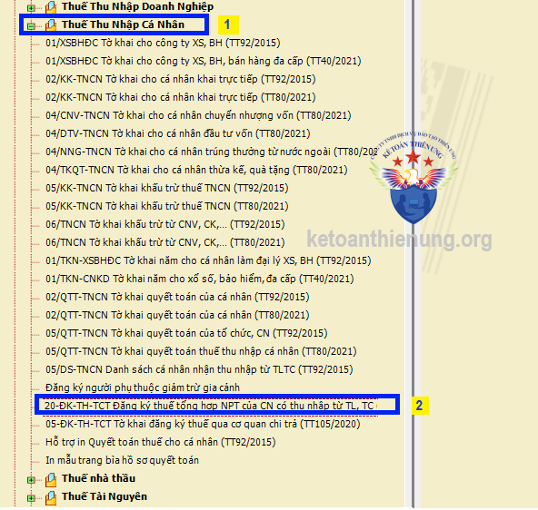
CÁCH 1: Làm mẫu 20-ĐK-TH-TCT trên phần mềm HTKK
Bước 1: Các bạn đăng nhập vào phần mềm HTKK => "Kê khai" => "Thuế thu nhập cá nhân" => "“20-ĐK-TH-TCT Đăng ký thuế tổng hợp NPT của CN có thu nhập từ TL, TC”", như hình bên dưới:
Bước 2: Tiếp theo các bạn chọn: "Ngày" => "Tháng" => "Năm" => ấn "Đồng ý"
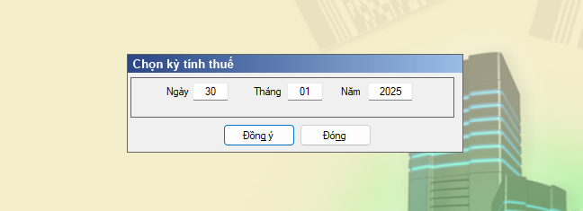
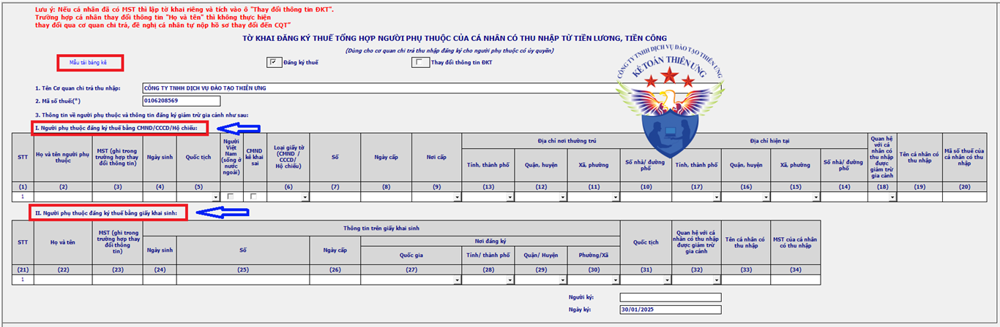
+ Trường hợp đăng ký người phụ thuộc cho nhiều người các bạn tải bảng kê Excel như sau:
Bước 1: Bấm vào "Mẫu tải bảng kê" chữ màu xanh, góc trên, bên trái => để tải mẫu bảng kê Excel chuẩn của phần mềm HTKK về máy tính.
Bước 2: Nhập hoặc copy thông tin vào file Excel đó.
Bước 3: Lưu file đó (Chú ý: không được đổi tên file Excel đó)
Bước 4: Bấm vào "Tải bảng kê" trên phần mềm HTKK => chọn file Excel vừa làm xong đó. (Chú ý: trước khi tải file Excel đó vào HTKK thì tắt file Excel đó đi)
Chi tiết xem tại đây nhé: Cách tải file Excel vào phần mềm HTKK.
CÁCH 2: Đăng ký người phụ thuộc trực tuyến bằng Mẫu số 20-ĐK-TH-TCT theo Thông tư số 105/2020/TT-BTC trên trang thuedientu
Chú ý: Cách này thường áp dụng cho DN đăng ký người phụ thuộc cho ít người.
(Vì sẽ tạo hồ sợ trực tuyến trên website thuedientu => xong rồi nộp)
Bước 1:
- Các bạn cắm Chữ ký số vào máy tính và truy cập vào Thuedientu.gdt.gov.vn
=> Đăng nhập bằng Tài khoản chữ ký số (MST Doanh nghiệp bạn đã đăng ký nhé).
=> Chú ý: Đăng nhập bằng MST doanh nghiệp và thêm chữ -QL nhé. (Cũng giống như trên Cách 1 nhé).
Ví dụ: 0106208569-QL 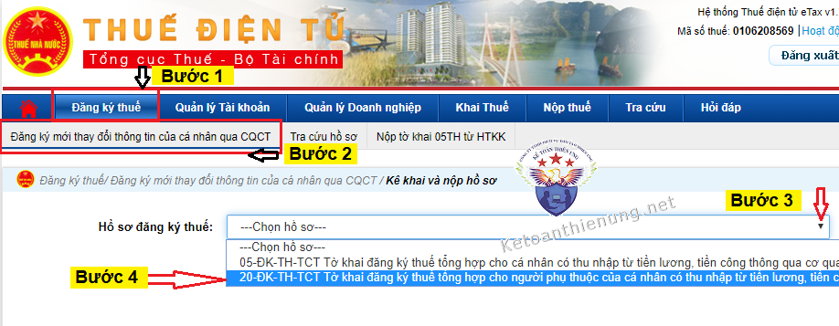 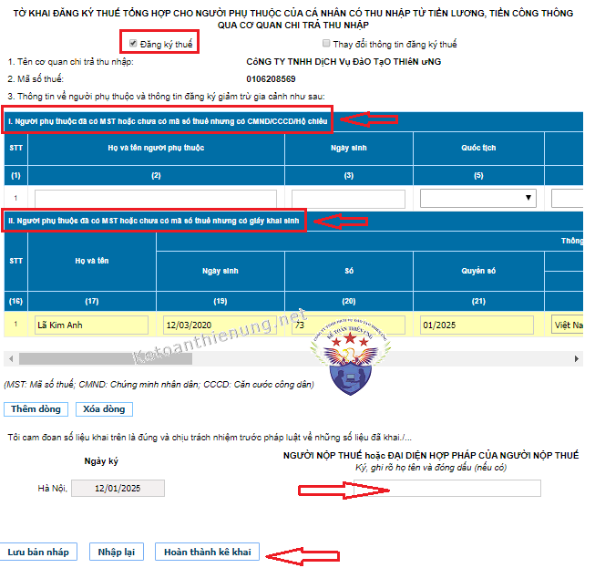
=> Sau khi đăng nhập thành công: => bấm vào "Đăng ký thuế" => bấm "Đăng ký mới thay đổi thông tin của cá nhân qua CQCT" => tiếp đó chọn hồ sơ đăng ký thuế "Mẫu 20-ĐK-TH-TCT"
=> Sau khi chọn xong => sẽ xuất hiện tờ khai đăng ký người phụ thuộc => các bạn khai trực tiếp trên tờ khai này nhé:
Cách khai Mẫu 20-ĐK-TH-TCT trực tuyến trên thuedientu:
- Trường hợp Đăng ký người phụ thuộc mới (đăng ký lần đầu, người phụ thuộc chưa có MST) => tích chọn "Đăng ký thuế"
- Trường hợp thay đổi như: Tăng, giảm, cắt người phụ thuộc, thay đổi nơi làm việc (Người phụ thuộc đã có MST) => tích chọn "Thay đổi thông tin đăng ký thuế"
- Nếu đăng ký người phụ thuộc mới:
+) Trường hợp người phụ thuộc có CMND, CCCD, hộ chiếu => thì khai vào Mục I
+) Trường hợp người phụ thuộc nhỏ tuổi, chỉ có giấy khai sinh => thì khai vào Mục II.
- Nếu thay đổi: Báo tăng, giảm, cắt người phụ thuộc:
+) Trường hợp người phụ thuộc có CMND, CCCD, hộ chiếu => thì khai vào Mục I
+) Trường hợp người phụ thuộc nhỏ tuổi, chỉ có giấy khai sinh => thì khai vào Mục II.
-----------------------------------------------------------------------
Ví dụ 1:
- Nhân viên A muốn đăng ký người phụ thuộc là con (còn nhỏ, chỉ có giấy khai sinh) và đăng ký mới (chưa có MST người phụ thuộc) => thì tích chọn "Đăng ký thuế" => và khai vào Mục II.
- Nhân viên B muốn đăng ký người phụ thuộc là con (còn nhỏ, chỉ có giấy khai sinh) và đăng ký cắt giảm (tức là người con này đã có MST người phụ thuộc) => thì tích chọn "Thay đổi thông tin đăng ký thuế" => và khai vào Mục II.
------------------------------------------------------------------------
Ví dụ 2: Đăng ký người phụ thuộc mới, chưa có MST:
- Nhân viên Đặng Văn C muốn đăng ký người phụ thuộc là con Đặng Văn B từ tháng 8/2024. (con Đặng Văn B chưa có MST người phụ thuộc, chỉ có giấy khai sinh và chưa được ai đăng ký giảm trừ).
Cách khai trên Mẫu 20-ĐK-TH-TCT như sau:
=> Khai thông tin vào Mục II.
=> Cột "Thời điểm bắt đầu tính giảm trừ (tháng/năm)" ghi: 8/2025
=> Cột "Thời điểm kết thúc tính giảm trừ (tháng/năm)" ghi: Để trống (nếu chưa xác định được muốn giảm trừ đến khi nào). - Nếu xác định là đăng ký giảm trừ gia cảnh đến thời điểm nào thì ghi rõ tháng/năm vào đây: VD đến: 12/2025.
-----------------------------------------------------------------------
Ví dụ 3: Trường hợp đăng ký thay đổi người phụ thuộc (Tăng, giảm, cắt):
- Nhân viên Đặng Văn D muốn đăng ký người phụ thuộc là con Đặng Văn B từ tháng 1/2025 (chỉ có giấy khai sinh)
- Nhưng người con Đặng Văn B được mẹ đăng ký giảm trừ ở 1 công ty khác từ tháng 4/2023.
Cách khai trên Mẫu 20-ĐK-TH-TCT như sau:
- Bước 1: Yêu cầu bên Công ty của mẹ đăng ký giảm (cắt) người phụ thuộc đó.
- Sẽ có 2 trường hợp xảy ra như sau:
+) Nếu khi đăng ký Người phụ thuộc bên công ty mẹ ghi Cột "Thời điểm kết thúc tính giảm trừ (tháng/năm)" là: 12/2024 => thì bên công ty mẹ không phải báo giảm nữa (vì đăng ký đến 12/2024 là hết rồi).
+) Nếu khi đăng ký Người phụ thuộc bên công ty mẹ ghi Cột "Thời điểm kết thúc tính giảm trừ (tháng/năm)" là "Để trống" (tức là chưa biết giảm trừ đến khi nào) => thì bên công ty mẹ phải khai báo giảm:
=> Cách thực hiện như sau: nhập thông tin của người Mẹ và Con vào Mục 2 (vì đã có MST người phụ thuộc và chỉ có Giấy khai sinh) => cột "Thời điểm bắt đầu tính giảm trừ (tháng/năm)" ghi: 04/2023. => cột "Thời điểm kết thúc tính giảm trừ (tháng/năm)" ghi: 12/2024.
(Vì người bố muốn đăng ký giàm trừ từ tháng 1/2024, nên bên công ty mẹ phải báo giảm tháng 12/2024)
- Bước 2: Sau khi bên công ty mẹ báo giảm thành công (có kết quả trả về) => bên công ty người Cha thực hiện đăng ký Tăng.
=> Cách thực hiện như sau: Nhập thông tin của người Cha và Con vào Mục 2 => cột "Thời điểm bắt đầu tính giảm trừ (tháng/năm)" ghi: 01/2025.
- Cột "Thời điểm kết thúc tính giảm trừ (tháng/năm)" ghi như sau: Để trống (nếu chưa xác định được muốn đăng ký giảm trừ đến khi nào) - Còn nếu muốn đăng ký giảm trừ đến thời điểm nào thì ghi rõ số tháng/năm: Ví dụ đến 12/2025.
---------------------------------------------------------------------
Ví dụ 4: Trường hợp nhân viên thay đổi nơi làm việc:
- Nhân viên E đăng ký người phụ thuộc là con => Người con này nhân viên E đã đăng ký giảm trừ ở công ty A (tức là đã được cấp MST người phụ thuộc) => Bây giờ nhân viên E chuyển sang làm công ty B và muốn đăng ký giảm trừ người con đó.
=> Thì quy trình các bạn cũng làm như trên nhé (Ví dụ 3) => Tức là bên công ty A phải báo giảm => Sau đó bên công ty B mới báo tăng được (và bên công ty B cũng phải yêu cầu nhân viên E phải chuẩn bị 1 bộ hồ sơ người phụ thuộc như bên công ty A nhé).
Chú ý: Trường hợp trên Giấy khai sinh không có "Quyển số" hoặc trường hợp người già trên CMND chỉ có năm sinh: => Thì các bạn cũng nhập như trên Cách 1 nhé.
---------------------------------------------------------------------------------------------
- Sau khi khai xong các thông tin, các bạn bấm "Hoàn thành kê khai" => "Nộp hồ sơ đăng ký thuế"
=> Tiếp đó các bạn vào "Tra cứu hồ sơ" để xem tình trạng hồ sơ như thế nào nhé.
Kết quả: Nếu các bạn nộp đủ hồ sơ và khai đúng chỉ trong ngày là có kết quả ngay nhé => các bạn tải kết quả đó về để kiểm tra nhé. 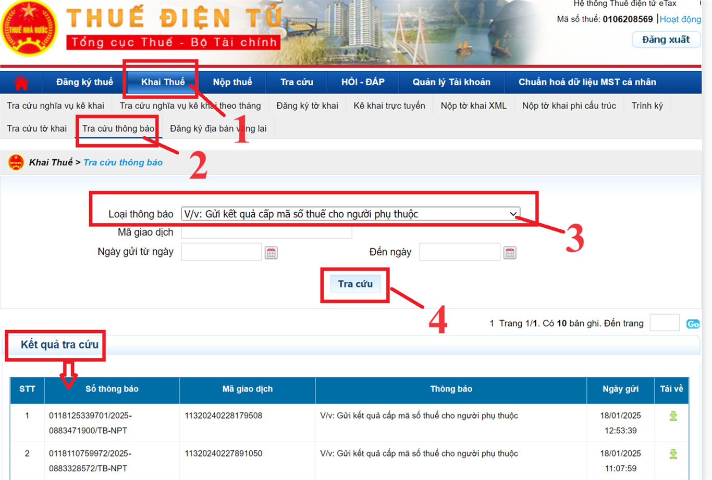
- Bấm vào "Tra cứu hồ sơ" => Lựa chọn Hồ sơ đăng ký thuế "Mẫu 20ĐK-TH-TCT" => "Tra cứu".
=> Tiếp đó, các bạn bấm vào cột "Thông báo" để tải kết quả về nhé.
- Như vậy là các bạn đã đăng ký xong người phụ thuộc và đã có kết quả ngay trong ngày nhé.
------------------------------------------------------------------------------------------
Một số lỗi khi Cơ quan thuế trả kết quả về:
- Căn cứ vào kết quả phản hồi nhận được từ CQT, trường hợp cấp MST không thành công TCTTN yêu cầu người lao động bổ sung thông tin và thực hiện theo hướng dẫn sau:
+ Lỗi do thông tin kê khai sai: TCTTN kê khai điều chỉnh bổ sung thông tin.
+ Lỗi trùng thông tin CMND/giấy khai sinh của NPT: TCTTN thông báo với người lao động thực hiện việc xác minh, điều chỉnh thông tin CMND/ Giấy khai sinh như nội dung hướng dẫn của Tổng cục Thuế đối với các trường hợp cấp MST cho NNT trùng CMND trước đây và khai nộp lại với CQT (gồm danh sách trùng và phô tô chứng minh nhân dân hoặc giấy khai sinh).
+ Trùng thời gian giảm trừ NPT: TCTTN hướng dẫn NNT thực hiện đăng ký kết thúc giảm trừ gia cảnh của lần đăng ký trước đó hoặc điều chỉnh thời gian giảm trừ của lần đăng ký hiện tại.
------------------------------------------------------------------------------------
3. Hạn nộp hồ sơ đăng ký người phụ thuộc cho cơ quan thuế:
Theo Điều 33 Luật quản lý thuế số 38/2019/QH14 quy định:
"Đăng ký thuế thay cho người phụ thuộc của người nộp thuế chậm nhất là 10 ngày làm việc kể từ ngày người nộp thuế đăng ký giảm trừ gia cảnh theo quy định của pháp luật trong trường hợp người phụ thuộc chưa có mã số thuế."
Theo Công văn 801/TCT- TNCN và Thông tư 111/2013/TT-BTC quy định:
" Trường hợp người nộp thuế có phát sinh nghĩa vụ nuôi dưỡng đối với người phụ thuộc khác hướng dẫn tại tiết d.4, điểm d, khoản 1, Điều 9 Thông tư số 111/2013/TT-BTC ngày 15/8/2013 của Bộ Tài chính (như: Anh ruột, chị ruột, em ruột, Ông nội, bà nội; ông ngoại, bà ngoại; cô ruột, dì ruột, cậu ruột, chú ruột, bác ruột, Cháu ruột…) thì thời hạn đăng ký giảm trừ gia cảnh chậm nhất là ngày 31/12 của năm tính thuế, quá thời hạn nêu trên thì không được tính giảm trừ gia cảnh cho năm tính thuế đó."
------------------------------------------------------------------------------------------
Trường hợp người phụ thuộc thay đổi thông tin đăng ký thuế:
Căn cứ theo Điều 36 Luật quản lý thuế số 38/2019/QH14
- Trường hợp cá nhân có ủy quyền cho tổ chức, cá nhân chi trả thu nhập thực hiện đăng ký thay đổi thông tin đăng ký thuế cho cá nhân và người phụ thuộc thì phải thông báo cho tổ chức, cá nhân chi trả thu nhập chậm nhất là 10 ngày làm việc kể từ ngày phát sinh thông tin thay đổi;
=> Tổ chức, cá nhân chi trả thu nhập có trách nhiệm thông báo cho cơ quan quản lý thuế chậm nhất là 10 ngày làm việc kể từ ngày nhận được ủy quyền của cá nhân.
Cụ thể như sau:
- Khi người phụ thuộc có thay đổi thông tin đăng ký thuế như các thông tin trên giấy tờ tùy thân Chứng minh nhân dân, Căn cước công dân, Giấy khai sinh, Hộ chiếu… Thì phải nộp hồ sơ như sau:
*) Cá nhân nộp hồ sơ cho Doanh nghiệp:
- Văn bản ủy quyền (có thể chỉnh sửa Mẫu ủy đăng ký người phụ thuộc nêu trên là dùng được nhé).
- Bản sao các giấy tờ có thay đổi thông tin liên quan đến đăng ký thuế của người phụ thuộc.
*) Doanh nghiệp nộp hồ sơ cho Cơ quan thuế:
- Doanh nghiệp có trách nhiệm tổng hợp thông tin thay đổi của người phụ thuộc vào tờ khai đăng ký thuế Mẫu số 20-ĐK-TH-TCT ban hành kèm theo Thông tư 105/2020/TT-BTC gửi cơ quan thuế quản lý.
*) Nếu cá nhân không làm việc tại Doanh nghiệp nào:
- Khi có thay đổi thông tin đăng ký thuế của người phụ thuộc (bao gồm cả trường hợp thay đổi cơ quan thuế quản lý trực tiếp) nộp hồ sơ cho Chi cục Thuế, Chi cục Thuế khu vực nơi cá nhân đăng ký hộ khẩu thường trú hoặc tạm trú.
Hồ sơ gồm:
- Tờ khai điều chỉnh, bổ sung thông tin đăng ký thuế mẫu số 08-MST ban hành kèm theo Thông tư 105/2020/TT-BTC;
- Bản sao Thẻ căn cước công dân hoặc bản sao Giấy chứng minh nhân dân còn hiệu lực đối với người phụ thuộc là người có quốc tịch Việt Nam; Bản sao Hộ chiếu còn hiệu lực đối với người phụ thuộc là người có quốc tịch nước ngoài hoặc người có quốc tịch Việt Nam sinh sống tại nước ngoài trong trường hợp thông tin đăng ký thuế trên các Giấy tờ này có thay đổi.
---------------------------------------------------------------------------------------------
4. Địa điểm nộp hồ sơ chứng minh người phụ thuộc:
- Cá nhân đăng ký Người phụ thuộc nộp hồ sơ chứng minh người phụ cho Doanh nghiệp chi trả thu nhập.
- Doanh nghiệp trả thu nhập có trách nhiệm lưu giữ hồ sơ chứng minh người phụ thuộc và xuất trình khi cơ quan thuế thanh tra, kiểm tra thuế.
Thời hạn nộp hồ sơ chứng minh người phụ thuộc:
- Thời hạn nộp hồ sơ chứng minh người phụ thuộc: trong vòng ba (03) tháng kể từ ngày nộp tờ khai đăng ký người phụ thuộc (bao gồm cả trường hợp đăng ký thay đổi người phụ thuộc) và (bao gồm cả trường hợp phát sinh tăng, giảm người phụ thuộc hoặc mới ra kinh doanh).
=> Quá thời hạn nộp hồ sơ nêu trên, nếu người nộp thuế không nộp hồ sơ chứng minh người phụ thuộc sẽ không được giảm trừ cho người phụ thuộc và phải điều chỉnh lại số thuế phải nộp.
Lưu ý: Người nộp thuế chỉ phải đăng ký và nộp hồ sơ chứng minh cho mỗi một người phụ thuộc một lần trong suốt thời gian được tính giảm trừ gia cảnh.
=> Trường hợp người nộp thuế thay đổi nơi làm việc thì thực hiện đăng ký và nộp hồ sơ chứng minh người phụ thuộc như trường hợp đăng ký người phụ thuộc lần đầu.
Xem thêm: Cách đăng ký mã số thuế cá nhân
---------------------------------------------------------------------------------------
Kế toán Diệu Tâm chúc các bạn làm tốt công việc kế toán.
Các bạn muốn hiểu hết về thuế TNCN như: Cách tính thuế TNCN, cách kê khai thuế TNCN tháng/quý; Cách quyết toán thuế TNCN cuối năm ... Có thể tham gia Khóa học kế toán thuế thực hành thực tế chuyên sâu.
------------------------------------------------------------------------------------